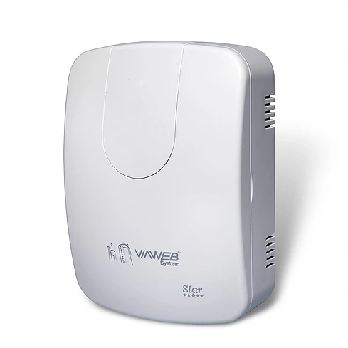
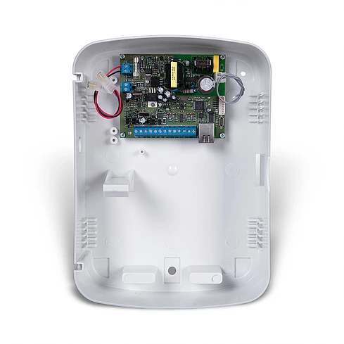

Modelo de centrais de alarme
Central VW8Z IP Star

Caracteristicas
- Comunicador IP integrado;
- Compatível com aplicativo VIAWEBmobile
- 8 zonas, expansível;
- 8 partições;
- Permite utilização de receptor de 12 setores + 12 controles sem fio (opcional);
- Ajuste de relógio automático com horário de verão
- Permite enviar e-mail;
- Até 900 usuários;
- Buffer 2048 eventos;
- Até 8 teclados;
- 2 saídas programáveis;
- 2 sirenes particionadas;
- 1 saída de sirene de 2,5A;
- Saída auxiliar de 1,2A;
- Fonte chaveada (110 – 240 VCA);
- Totalmente programável através do software gratuito VIAWEB download;
- Servidor web embarcado para operação e programação. Com o servidor interno é possível programar a central e todos os periféricos utilizando um computador conectado à rede local (sem o uso de teclado).
Para mais informações acesse: ViaWeb